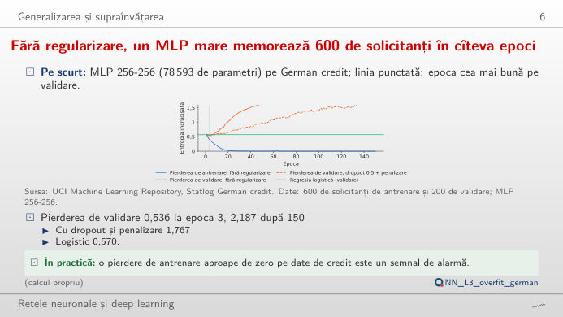
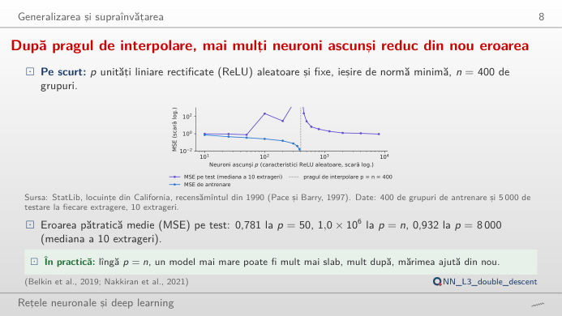
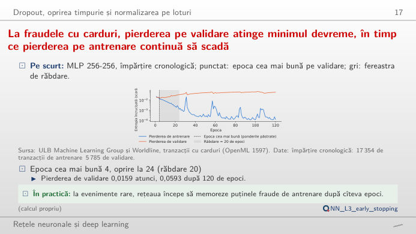
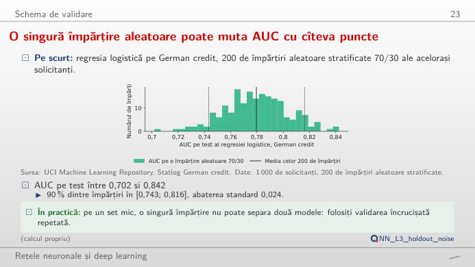
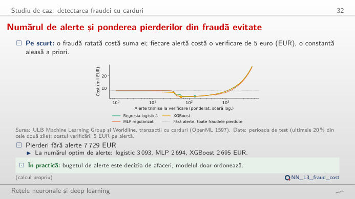

În stînga este slide-ul din curs, în dreapta aceeași figură, recalculată în browser din datele cursului cînd modificați un control. Butonul ▶ modifică parametrul principal pas cu pas. Sub fiecare figură: o sinteză numerică, o întrebare pentru sală și Quantlet-ul cu codul figurii. Curbele sînt antrenările reale din curs, salvate epocă cu epocă; controalele aleg antrenarea afișată și momentul în care o opriți.
Supraajustare și generalizare · Oprirea timpurie · Validarea și costul erorilor
Supraajustare și generalizare
Fără regularizare, un MLP mare memorează 600 de solicitanți în cîteva epoci

Răspuns
Nu prea. Fără regularizare, entropia încrucișată pe validare este minimă la epoca 3 (0,536, sub regresia logistică, 0,570) și crește la 2,187 pînă la epoca 150, în timp ce pierderea de antrenare scade la 0,0001: rețeaua memorează solicitanții de antrenare și devine prea sigură pe ea. AUC pe validare, care privește doar ordonarea, trece de la 0,730 la epoca 3 la 0,780 la epoca 150 (regresia logistică: 0,760). O penalizare a ponderilor de 1 ține pierderea finală pe validare la 1,08; dropout-ul singur ajută puțin. Probabilitățile (pentru stabilirea dobînzii, a provizioanelor) sînt afectate de supraajustare mult mai mult decît ordonarea; de aceea cursul le raportează pe amîndouă.
După pragul de interpolare, mai mulți neuroni ascunși reduc din nou eroarea

Răspuns
Explodează: MSE mediană pe test este de aproximativ 1.019.219 la p = 400, pentru că ajustarea prin cele mai mici pătrate trebuie să interpoleze fiecare punct de antrenare cu un sistem prost condiționat. Sub prag, cel mai bun este p = 50 (0,781); peste prag, soluția de normă minimă devine din nou mai netedă, iar MSE pe test coboară la 0,932 la p = 8.000: „a doua coborîre”. MSE de antrenare este zero de la p = 400 încolo. Curba clasică în U deplasare–varianță și regimul modern supraparametrizat sînt două jumătăți ale aceleiași curbe.
Oprirea timpurie
La fraudele cu carduri, pierderea pe validare atinge minimul devreme, în timp ce pierderea pe antrenare continuă să scadă

Răspuns
Pierderea pe validare este minimă la epoca 4 (0,0159); cu răbdarea 20, antrenarea se oprește la epoca 24 și restabilește ponderile epocii 4. PR-AUC pe validare al acestora este 0,763, față de 0,697 dacă am continua pînă la epoca 120. Răbdarea 1 oprește prea devreme (epoca 3, păstrînd epoca 2, PR-AUC 0,741); orice răbdare între 2 și 60 păstrează aici epoca 4. Răbdarea schimbă timp de calcul contra riscului de a ne opri pe o scădere zgomotoasă.
Validarea și costul erorilor
O singură împărțire aleatoare poate muta AUC cu cîteva puncte

Răspuns
Foarte diferite: pe 200 de împărțiri aleatoare, AUC variază între 0,702 și 0,842 (media 0,780, abaterea standard 0,024). Cu un set de test de 10% (100 de solicitanți, circa 30 de neplăți), abaterea standard se dublează la 0,047; cu 50% scade la 0,019, dar modelul este antrenat pe mai puțini solicitanți (AUC mediu 0,767). O diferență de 0,01–0,02 AUC între două modele, pe un singur set mic de test, este zgomot; avem nevoie de validare încrucișată repetată sau de un test pe perechi.
Numărul de alerte și ponderea pierderilor din fraudă evitate

Răspuns
Fără model, toate fraudele din setul de test sînt pierdute: 7.729 EUR. Cu un cost de verificare de 5 EUR, MLP regularizat ajunge la minimul de 2.694 EUR, cu aproximativ 59 de alerte ponderate; XGBoost este practic egal (2.695 EUR), iar regresia logistică costă 3.093 EUR, la circa 142 de alerte. Creșteți costul verificării: fiecare model trimite mai puține alerte și lasă să treacă mai multe fraude mici, iar diferența dintre modele crește. Pragul este un parametru de afaceri, stabilit de costul fiecărei erori, nu de model.
Date: UCI Statlog German credit (1.000 de solicitanți; 600 de antrenare, 200 de validare, 200 de test), tranzacțiile cu carduri ULB și Worldline (OpenML 1597; toate cele 492 de fraude și un eșantion de 10% din tranzacțiile legitime, ponderate înapoi la cele 284.807 tranzacții din cele două zile; împărțire cronologică 60/20/20), locuințele din California (StatLib, recensămîntul din 1990). Modelele, împărțirile și semințele (20261108 + s) sînt cele din curs (analysis_L3.py): perceptroni multistrat (MLP) antrenați cu AdamW (Adam cu penalizarea ponderilor decuplată); PR-AUC = aria de sub curba precizie-sensibilitate.